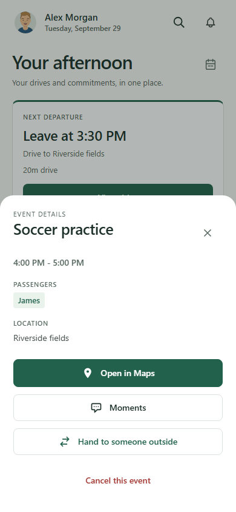
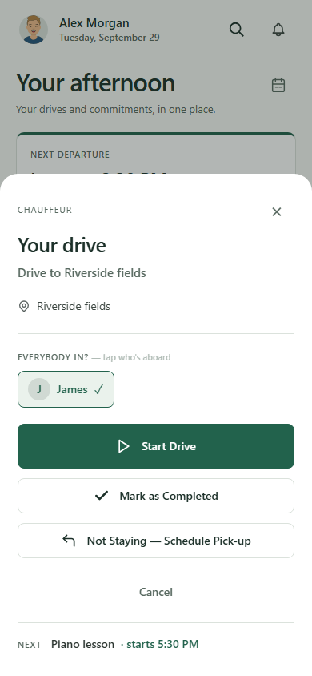
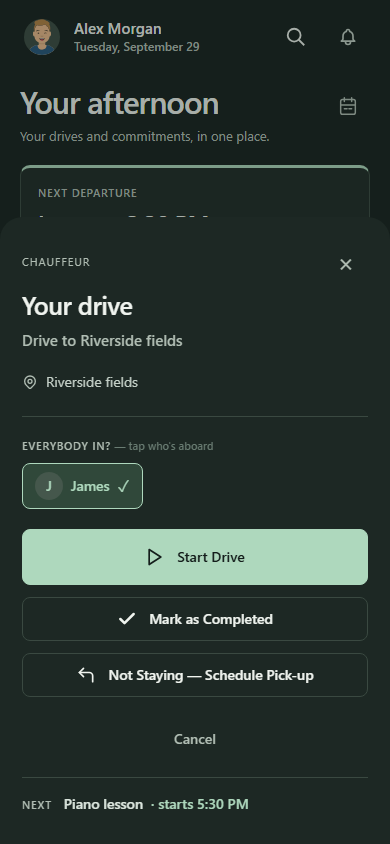
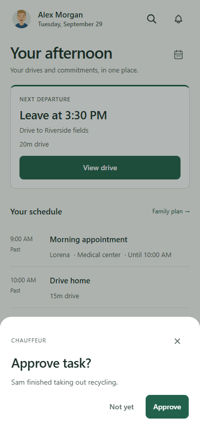
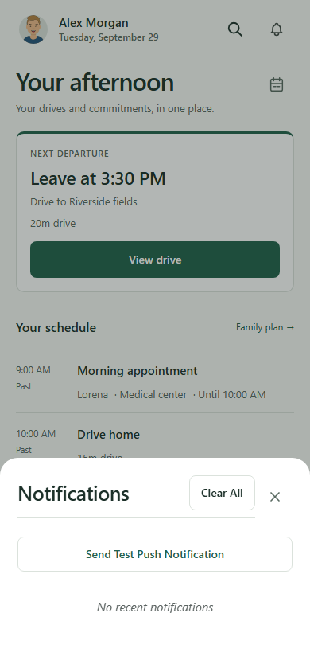
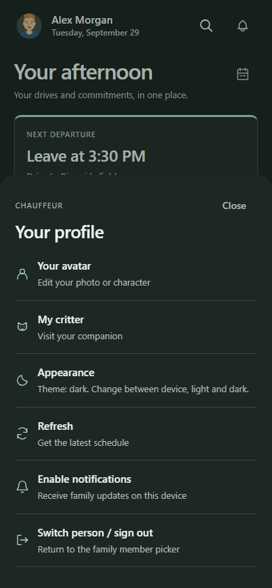
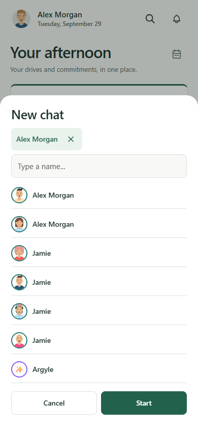

Back to the approved design reviewAdult action sheets · 2.499.212
Captures of the working PWA with fictional data. Shared sheets now follow the proposal's typography, spacing, neutral surfaces, and primary/secondary buttons. Drive controls retain large touch targets; passenger and packing states retain their meaning.
Event details

Drive details

Drive details · dark

Shared confirmation

Notifications

Dark version
Profile

Light version
New chat

Dark version
The same sheet styles apply to shared choice/input, session/trip, profile/review, notification, PIN and new-chat dialogs. Existing actions and permissions remain in place. Child sheet styles are preserved.
Main-screen comparison · Scope and validation